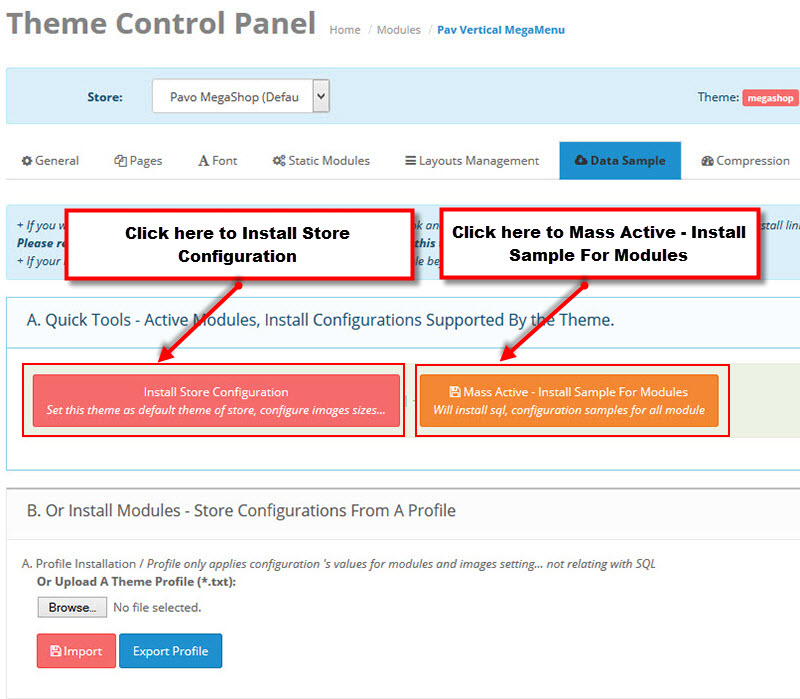
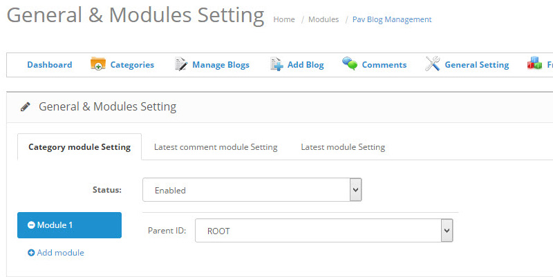
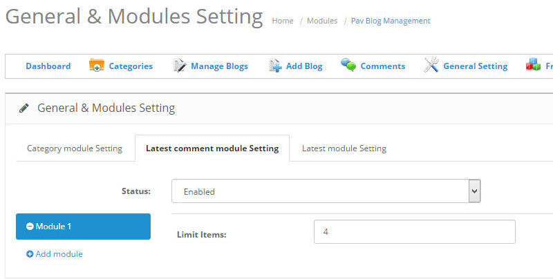

Pav MegaShop Documentation
Getting Started
Firstly, we would like to thank you for purchasing Pav MegaShop and chosen it for your website. We outline all kinds of good information, and provide you with all the details you need to use Pav MegaShop.
If you are unable to find your answer here in our documentation, feel free to ask for help from our support team, all you have to do is submitting a ticket via our Support Ticket system.
Opencart 2.0.1 and Layout Builder
Pav Opencart is native with OpenCart 2.0.1, the latest version of OpenCart and it's powered with the best Opencart page builder, you can check out the video tutorial HERE →
Here are some significant changes in Opencart 2.0.1
- Responsive catalog and admin themes built on Bootstrap
- OCmod - virtual file modification
- Redesigned admin area and front end
- Move payment gateways included in the standard download
- Event notification system
- Custom form fields
Pavo MegaShop OpenCart theme Overview
Pav MegaShop is a responsive OpenCart theme for MegaShop, Fashion and Beauty. The OpenCart theme is developed with Pavo Framework version 4, SASS - Syntactically Awesome Style Sheets, it integrates Bootstrap 3, Font Awesome, supports HTML5 and CSS3. Pav MegaShop menu system is powerful with Megamenu and Off-canvas.
The theme also supports many modules that will help you save time and money to build a full functionality E-commerce website.
- Pav Auto Seach
- Pav Banners Builder
- Pav Blog Management
- Pav Blog Category Module
- Pav Blog Latest Comment Module
- Pav Blog Latest Module
- Pav Carousel
- Pav Category Tabs
- Pav Home Page Builder
- Pav GoogleMap
- Pav MegaMenu
- Pav Newsletter
- Pav Product Tabs
- Pav Reassurance
- Pav Layers Sliders
- Pav Social
- Pav Vertical Category Tabs Module
- Pav Vertical MegaMenu
- Theme Control Panel
You can have a complete E-commerce website in some simple steps with our sample data package included when you install the theme.
Download and Installation
The instruction is to help you with installation of the Pav MegaShop.
Download packages
To download Pav MegaShop, please check it out at:
Once the download is complete, unzip the file and you would see the following packages:
- Guides - our detail documentation for the theme
- Quickstart package - for quickstart installation
- Theme folder - for manual installation
- Modules - the installation packages of all modules used in the theme
- Source - the PSD files of the theme
- Licensing - the theme license
System Requirement
OpenCart requires certain technical requirements to be met for the store to operate properly. First, a web server must be created to make the OpenCart store publicly available on the web. Domain names and hosting services can easily be purchased for an affordable price.
When selecting a hosting service, you should check to see that these server requirements are provided and installed on their web servers:
- Web Server (Apache suggested)
- PHP (at least 5.2)
- Curl enabled
- Database (MySQLi suggested)
Quickstart Installation
The Quickstart Package includes Opencart core, Pav MegaShop theme, Extensions supported for the theme, and Sample data. Quickstart is the best choice for beginner to explore back-end settings and for new site building. Installing the Quickstart steps is just like Opencart installation, after the step, you will have a site that is exactly the same as our demo site.
Installing in Localhost or installing on your hosting is almost the same. Here is the quick guide to install Quickstart in localhost.
- Step 1 - Create a folder in htdocs folder for Xampp, www folder for Wamp
- Step 2 - Unpack the Quickstart package then copy all the files and folders to the new created folder.
- Step 3 - Create database: You can create a database in your hosting provider's control panel, for example cPanel. It may also be possible to do so in phpMyAdmin. Remember to take note of the details that you use as you'll need them for the next step.
- Step 4 - Rename file: config-dist.php to config.php and admin/config-dist.php to admin/config.php.
- Step 5 - Auto - installer: The final step is to run the auto-installer. Open your favourite web browser and add “/install” to the end of your site's website address. When doing this you should see with the following page:
The 4 steps in the auto-installer wizard.
- Accept License: Click “Continue” after reading the GNU licence.
- Pre-Installation: The pre-installation page checks that your server meets the minimum requirements. If there are any issues then you may need to contact your hosting provider. Assuming that everything is okay, click the “Continue” button.
- Configuration: In section one, enter the database details that you used in step 3 and in section two enter your desired admin username, password and email address. Once all of the information is entered, click the “Continue” button.
- Finished: That's it! Now delete or rename the installation directory and you're DONE.
Theme Installation
Before you install this theme:
- Read our complete instruction to install theme
- Make sure you have installed and running the correct version of OpenCart: OpenCart 2.0.1.x
- Take a FULL BACKUP for your site
We recommend to use this theme on a new, clean installation or existing shops without custom core modifications.
Steps to install Pav MegaShop Theme manually:
Step 1 - Unzip the theme package
After unzip the download package, please unzip the theme package - pav_megashop_themes_unzip.zip
Step 2 - Upload theme to your OpenCart site root directory
Module Installation
Step 1 - Unzip the module package
Step 2 - Upload the folder admin, catalog,... in the Module package that you want to install to the root directory of your OpenCart site
Step 3 - When you install MegaShop theme manually, please unzip the Quickstart file: pav_megashop_full\pav_megashop_quickstart.zip\image. Then go to image folder and copy to theme folder.
Step 4 - After uploading all the folders, you can install it as Quickstart installation
Step 5 - Go to your OpenCart site admin panel, navigate to: Extensions → Modules, find the module you just uploaded then hit the "Install" button to proceed with the module installation.
After installing all modules, please navigate to System → Design → Layouts
Click on the Edit button to choose the page you need to edit then click on the Add module button.
Choose any module you want and assign the position for it
Theme Configuration
Supported themes/layouts
Pav MegaShop is a 2 in 1 OpenCart theme. It supports 2 themes, layouts. Each theme has different style and different layout structure.
1. MegaShop 1 theme/layout
2. MegaShop 2 theme/layout
Activate Theme
Once the theme is uploaded, access your admin panel, navigate to: Admin > System > Settings, select Store > Edit
Next, select Store tab and set Pav MegaShop as your default store
Image Size Adjustment
In the Image setting panel, configure the image size for category, product thumbnail, product popup, etc that fit your layout best.
Theme Control Panel Setting
Pav MegaShop supports Theme Control Panel module that allows you to manage your theme and customize your theme easily based on tons of options built in such as Custom Font, Layout management, compression, etc.
From your OpenCart site admin panel, go to Admin > Extensions > Modules, open the setting panel of Theme Control Panel module.
General Settings
In the General setting, you can see a lot of settings. The screenshot below is based on our Demo site.

Here are the main things that you can do with the General setting panel.
- Select layout to configure
- Select theme for your site: default, green, yellow
- Theme layout width: you can design width for your layout or using auto mode by adding auto in the Theme Layout Width field.
- Using customized copyrights info or not
- Enable or disable OffCanvas Sidebars
- Enable Panel Tool: the tool is to quickly change theme, layout, header layout, etc on front-page of your site
- Template Layout Mode: select mode for your template layout - Full Width, Boxed Large
- Header Layout: select layout for your header
- Layout configuration for Product listing, Product detail
Pages Settings
Depend on page type, there are different settings. Select the page you want to edit then change the page setting using the available parameters.
Font Settings
The Font setting panel allows you to customize font for your whole site or for specific elements in your site such as heading, module heading, body. Google Font is supported.
Static Modules Settings
Static module is a OpenCart static module, depend on theme type, there are different modules. Select the module you want to edit then change the static module settings.
1. Logo
HTML code
<p><img src="http://localhost/dev/oc/2.0/opencart2.0/pav_megashop/image/catalog/logo.png"></p> <p><span>Praesent quis ante dapibus tellus mollis dapibus ullamcorper sit amet erat,</span><span>Praesent quis ante dapibus tellus mollis dapibus ullamcorper sit amet erat</span></p>
{kind=link}
2. About Us
HTML code
<div class="box pav-custom "> <div class="box-heading"><span>About Us</span> </div> <div class="box-content"> <div class="address"><p><span>Praesent quis ante dapibus tellus mollis dapibus ullamcorper sit amet erat. </span></p> <div class="box-addres"><div class="link-address icon"><span class="fa fa-map-marker"> </span><span>No 1104 Sky Tower, Newyork, USA</span> </div> <div class="link-mobile icon"><span class="fa fa-phone"> </span><span>Phone: +01 888 (000) 1234</span> </div> <div class="link-mail icon"><span class="fa fa-envelope"> </span><span>Email: support@gmail.com</span> </div> </div> </div> </div> </div>
{kind=link}
Layout Settings
Thanks to the Pavo Framework version 4, Pav MegaShop comes with powerful theme configuration admin panel that allows you to customize the theme easily without touching any file. You can customize font, changing logo, changing skin, etc.
Sample Data Settings
Sample data is an important part of any site, importing, exporting back-up sample data is a regular work. It's quite complex and risky if you do it manually. Theme Control Panel module helps you solve all the difficulties with the Sample Data management system.

CSS and JS Compression
Compression Feature allows to speed up your site by merging, compressing JS and CSS files.
All cached files are stored in folder system/cache/pavo-assets/. To clear cached you click to CLEAR button on the top right side corner of your setting panel.
CSS and JS Customization
You can add CSS rules and JS to customize for your site. The CSS rules and JS added in the panel will have highest priority so it will override the styles in your CSS files.
Live Theme Customization
This is amazed feature in our product. The feature is to customizing your theme with pre-define parameters such as font size, text color, background color, font family, etc.
Here is the steps to customizing your site with Live Theme Customization
Step 1 - Open the Live Theme Customization panel
Step 2 - Customize your site with pre-defined parameter.
The Live Theme Customization panel includes 2 main sections: the setting panel (include all pre-define parameters) and your site front-page. When you change setting of a parameter, you would see the change in the front-page at the same time.
Step 3 - Save the customization when you're done by hitting the "Submit" button.
Pav Module Configuration
The module configuration is based on Home 3 demo site, if you use the other layout, the module configuration is expected to be the same.
Pav MegaShop supports a lot of Pav modules that help you build a full Ecommerce functionality and help with content building for your site easier. Here is the instruction to use the extension the way they are used in Pav MegaShop demo site.
Pav Auto Search module
This module allows you to search for any product in this site. Just enter your search term, product list will be displayed below
To configure the module, please go to: Extensions > Modules, find the Pav Auto Search module then hit the "Edit" button to go to its setting panel.
{kind=link}
Pav Banners Builder module
The module allows you to add any banner to display in Pav Banners Builder module. All you have to do is adding banners you want to display in it, edit width, height, position,...
To configure the module, please go to: Extensions > Modules, find the Pav Banners Builder module then hit the "Edit" button to go to its setting panel.
1. Banner bottom
{kind=link}
2. Banner Content
{kind=link}
3. Banner Sidebar1
{kind=link}
4. Banner Sidebar2
{kind=link}
5. Banner Top
{kind=link}
6. Banner Top2
{kind=link}
Pav Blog module
This is the platform for Blog on Opencart. You can create categories, blog items and get it displayed in front-page brilliantly. The module comes with a lot of settings that allow you manage your blog post easily. It also includes comment system, a lot of modules such as Category module, Most Read blog module, Latest Comment module and Latest blog module.
To manage Your Blog system, please go to: Extensions > Modules, find the Pav Blog module then hit the "Edit" button to go to its setting panel.
General Settings
General setting
Category Page setting
Blog setting
Category Management
Blog Management
Comment Management
Category Module setting

Front-end appearance of the module
Latest Comment Module setting

Front-end appearance of the module
Latest Module setting
Front-end appearance of the module
Pav Carousel module
The module allows you to add any module to display in carousel. All you have to do is adding modules you want to display in carousel, configure layout, position, max items ...
To configure the module, please go to: Extensions > Modules, find the Pav Carousel module then hit the "Edit" button to go to its setting panel.
{kind=link}
Pav Category Tabs module
This module is used in MegaShop1 theme/layout
Pav Category Tabs module is to display list of products in the website. The categories are selected based on: Latest, Featured, Best Seller, Special, Most Viewed.
To configure the module, please go to: Extensions > Modules, find the Pav Category Tabs module then hit the "Edit" button to go to its setting panel.
1. Category Tabs - Mobile
{kind=link}
2. Category Tabs - Electronics
{kind=link}
3. Category Tabs - Homeware
{kind=link}
4. Category Tabs - Computers
{kind=link}
Pav Home Page Builder module
Pav Home Page Builder module is to help you build Homepage layout for your site the ways you want. In short, each layout is built up from blocks, each block contains columns, you can resize the columns and assign widgets to the columns. Each block, column, widget has its own setting to make sure you can build any layout you want.
To configure the module, please go to: Extensions > Modules, find the Pav Home Page Builder module then hit the "Edit" button to go to its setting panel.
Layout Settings
Pav MegaShop supports a lot of layouts, you can configure, customize any layout you want easily with the visual layout configuration. You can move a position to any place in the layout, assign any module to a position, etc.
1. Home Default 2. Home 2Quickly edit a module
Hit the Edit icon in the module loaded in the layout and you can edit settings of the module in a popup.
Changing position to any place in the layout
You can move a module to any position inside the layout panel, there are some hard fixed positions, blocks that you can not move such as Header, Footer.
Edit the width of the module for each position
For each module, you can edit the width of the module by dragging and dropping it..
Pav GoogleMap module
Pav GoogleMap module is to manage the location of your site, the customers can search easily the position of your store via google map.
To configure the module, please go to: Extensions > Modules, find the Pav GoogleMap module then hit the "Edit" button to go to its setting panel.
{kind=link}
Pav MegaMenu module
Pav MegaMenu module helps you create MegaMenu menu for your Opencart site. The visual configuration panel allows you to see the structure of the menu in front-page. What you change is what you see.
To configure MegaMenu, please go to: Extensions > Modules, find the Pav MegaMenu module then hit the "Edit" button. There are 3 main sections in the panel: the Menu management system, Widget management system and MegaMenu configuration panel.
Menu management system
The Menu management system allows you to:
- Edit any menu item: click on edit icon of the menu item you want to edit, then edit the settings of the menu item in the right panel.
- Change menu item's position: drag and drop the menu item to change its position, after changing the order of menu items, please hit the Update Order, the saving option in the panel does not save the order change of menu item.
Widget management system
The widgets are used to assign to megamenu. You can create as many widgets as you expect. The content of widget is also very flexible including: HTML, Product, Product category, etc.
You can edit any widget by hitting the "Edit" button or delete the widget that is not used any more.
To create new widget, please hit the Create Widget button.
- Select Wiget type: there are a lot of widget types such as HTML, Product, Product category,
- Add content for the widget: the content is depend on what widget type you select, add the required info and save the widget.
MegaMenu Configuration
In the main setting panel of MegaMenu, hit the Live MegaMenu Editor to access the MegaMenu configuration panel.

In the configuration panel, you can:
- Create sub-menu for any menu item, assign widget for the sub-menu and configure size of the sub-menu block.
- Add row, column inside created sub-menu block.
- Add class to style for column, row in sub-menu.
- Align sub-menu block: left, right, center
Pav Newsletter module
Pav Newsletter module is to manage signup newsletter for your site, you can display a SIGN UP FOR NEWSLETTER form in your site where user can add their email in the form to sign up for newsletter. In the back-end, you can create email and send to the subcriber.
To configure the module, please go to: Extensions > Modules, find the Pav Newsletter module then hit the "Edit" button. In the dashboard of the module, please select Frontend Modules to configure for the displaying of the module in front-page.
{kind=link}
Pav Product Tabs module
Pav Product Tabs module is to display list of products in the website. The products are selected based on: Latest, Featured, Best Seller, Special, Most Viewed.
To configure the module, please go to: Extensions > Modules, find the Pav Product Tabs module then hit the "Edit" button to go to its setting panel.
1. Latest
{kind=link}
2. Product Tabs
{kind=link}
Pav Reassurance module
Pav Reassurance module is to manage customer services in your store such as: Free Shipping, Best Price Guarantee, Click & Collect, 24 Months Interest.
To configure the module, please go to: Extensions > Modules, find the Pav Reassurance module then hit the "Edit" button to go to its setting panel.
{kind=link}
Pav Layers Sliders module
To configure the module, please go to: Extensions > Modules, find the Pav Layers Sliders module then hit the "Edit" button to go to its setting panel.
- Layer settings - Home1 slider
- Layer settings - Home2 slider
- Layer settings - Home3 slider
- Menu Assignment settings
{kind=link}
{kind=link}
{kind=link}
{kind=link}
Pav Social module
Pav Social module is to display list of social in the website. The social are selected: Facebook, Twitter, Youtube.
To configure the module, please go to: Extensions > Modules, find the Pav Social module then hit the "Edit" button to go to its setting panel.
1. Facebook
{kind=link}
2. Twitter
{kind=link}
3. Youtube
{kind=link}
Pav Vertical Category Tabs module
This module is used in MegaShop2 layout. The module displays list of products in the website.
To configure the module, please go to: Extensions > Modules, find the Pav Vertical Category Tabs module then hit the "Edit" button to go to its setting panel.
1. Fashion
{kind=link}
2. Cosmetics
{kind=link}
3. Women Shoes
{kind=link}
4. Mobile Digital
{kind=link}
5. Electronics
{kind=link}
6. Infant Toys
{kind=link}
7. Food
{kind=link}
Pav Vertical MegaMenu module
Pav Vertical MegaMenu module helps you create Vertical MegaMenu menu for your Opencart site.
To configure Vertical MegaMenu, please go to: Extensions > Modules, find the Pav Vertical MegaMenu module then hit the "Edit" button. There are 3 main sections in the panel: the Menu management system, Widget management system and MegaMenu configuration panel.
Menu management system
The Menu management system allows you to:
- Edit any menu item: click on edit icon of the menu item you want to edit, then edit the settings of the menu item in the right panel.
- Change menu item's position: drag and drop the menu item to change its position, after changing the order of menu items, please hit the Update Order, the saving option in the panel does not save the order change of menu item.
Widget management system
The widgets are used to assign to MegaMenu. You can create as many widgets as you expect. The content of widget is also very flexible including: HTML, Product, Product category, etc.
You can edit any widget by hitting the "Edit" button or delete the widget that is not used any more.
To create new widget, please hit the Create Widget button.
- Select Wiget type: there are a lot of widget types such as HTML, Product, Product category,
- Add content for the widget: the content is depend on what widget type you select, add the required info and save the widget.
Vertical MegaMenu Configuration
In the main setting panel of MegaMenu, hit the Live MegaMenu Editor to access the Vertical MegaMenu configuration panel.
In the configuration panel, you can:
- Create sub-menu for any menu item, assign widget for the sub-menu and configure size of the sub-menu block.
- Add row, column inside created sub-menu block.
- Add class to style for column, row in sub-menu.
- Align sub-menu block: left, right, center
Get Support
If you are unable to find your answer here in our documentation, please go to our forum and post up a new topic with all the details we need. Please be sure to include your site URL as well or send us an email.
Our support scope
Our support covers configuration, building site as demo, trouble using any features, and bug fixes. We don't provide support for customizations or 3rd party extension.
Our support time
We try our best to monitor the email around the clock, however, this is not always possible due to different time zones. We will try to reply you as fast as we can.
Our working time is 8.00 AM - 5.30 PM, Monday to Friday (GMT+7). So if ask for help in the weekend, you may have to wait a little bit for support and please be patient.